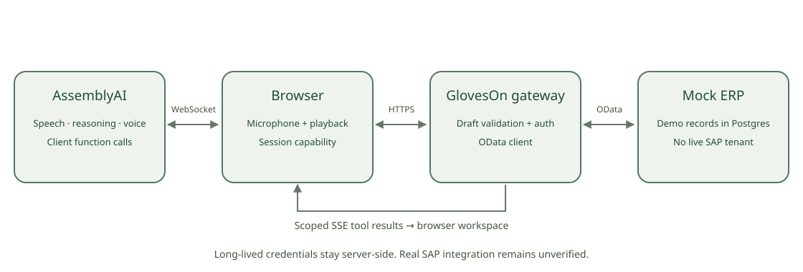

Quantity, unit, material description, bin. The description is load-bearing.
execution_mode: hold — the agent waits for the ERP instead of narrating success.
The same receipt within two minutes is caught — by a guard in the gateway, because real S/4HANA would accept it twice.
A wrong receipt gets a reversal document (102 against a 101). Both stay, because that is what a ledger is.
Click a posted row: the sentence the worker confirmed, and the second it happened.

The WMS issues the task; the worker answers fixed prompts. Decades of it. But a worker cannot initiate a document by describing it.
Posts and reverses goods movements — by chat, today. Real-time voice announced for its top cloud tiers, GA planned H2 2026.